# Library packages
library(here)
library(tidyverse)
library(Seurat)
library(SingleR)
library(ggrepel)
library(patchwork)
# Load PBMC dataset
pbmc_data <- Read10X(data.dir = "./learn/2023_scRNA_Seurat/pbmc3k/hg19/")
# Initialize the seurat boject witht raw (non-normalized data)
pbmc <- CreateSeuratObject(
counts = pbmc_data, project = "pbmc3k", min.cells = 3, min.features = 200
)
# View the data
pbmc
## An object of class Seurat
## 13714 features across 2700 samples within 1 assay
## Active assay: RNA (13714 features, 0 variable features)
## 1 layer present: counts
dim(pbmc_data)
## [1] 32738 2700
# Example a few genes in the first thirty cells
pbmc_data[c("CD3D", "TCL1A", "MS4A1"), 1:30]
## 3 x 30 sparse Matrix of class "dgCMatrix"
##
## CD3D 4 . 10 . . 1 2 3 1 . . 2 7 1 . . 1 3 . 2 3 . . . . . 3 4 1 5
## TCL1A . . . . . . . . 1 . . . . . . . . . . . . 1 . . . . . . . .
## MS4A1 . 6 . . . . . . 1 1 1 . . . . . . . . . 36 1 2 . . 2 . . . .Load packages and data
Preprocess data
QC
# The [[ operator can add columns to object metadata. This is a great place to stash QC stats
pbmc[["percent.mt"]] <- PercentageFeatureSet(pbmc, pattern = "^MT-")
# Show QC metrics for the first 5 cells
head(pbmc@meta.data, 5)
## orig.ident nCount_RNA nFeature_RNA percent.mt
## AAACATACAACCAC-1 pbmc3k 2419 779 3.0177759
## AAACATTGAGCTAC-1 pbmc3k 4903 1352 3.7935958
## AAACATTGATCAGC-1 pbmc3k 3147 1129 0.8897363
## AAACCGTGCTTCCG-1 pbmc3k 2639 960 1.7430845
## AAACCGTGTATGCG-1 pbmc3k 980 521 1.2244898
# Visualize QC metrics as a violin plot
VlnPlot(pbmc, features = c("nFeature_RNA", "nCount_RNA", "percent.mt"), ncol = 3)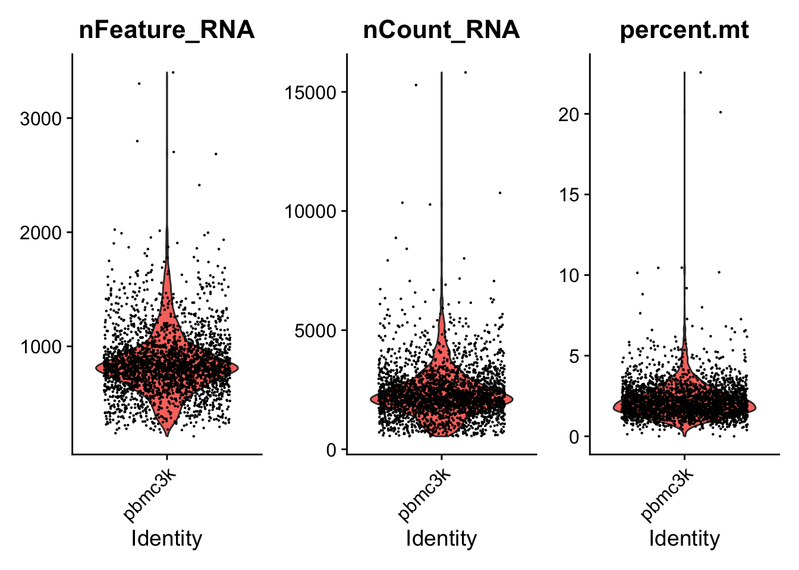
# FeatureScatter is typically used to visualize feature-feature relationships, but can be used
# for anything calculated by the object, i.e. columns in object metadata, PC scores etc.
plot1 <- FeatureScatter(pbmc, feature1 = "nCount_RNA", feature2 = "percent.mt")
plot2 <- FeatureScatter(pbmc, feature1 = "nCount_RNA", feature2 = "nFeature_RNA")
plot1 + plot2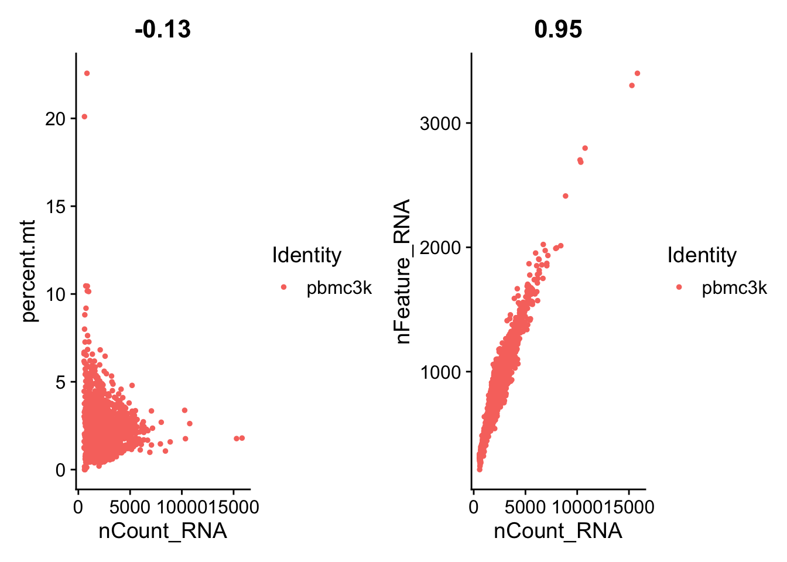
pbmc <- subset(pbmc, subset = nFeature_RNA > 200 & nFeature_RNA < 2500 & percent.mt < 5)Normalizing the data
pbmc <- NormalizeData(pbmc, normalization.method = "LogNormalize", scale.factor = 10000)
# pbmc <- NormalizeData(pbmc)
# pbmc@assays$RNA@counts is the raw count data
str(pbmc)
## Formal class 'Seurat' [package "SeuratObject"] with 13 slots
## ..@ assays :List of 1
## .. ..$ RNA:Formal class 'Assay5' [package "SeuratObject"] with 8 slots
## .. .. .. ..@ layers :List of 2
## .. .. .. .. ..$ counts:Formal class 'dgCMatrix' [package "Matrix"] with 6 slots
## .. .. .. .. .. .. ..@ i : int [1:2238732] 29 73 80 148 163 184 186 227 229 230 ...
## .. .. .. .. .. .. ..@ p : int [1:2639] 0 779 2131 3260 4220 4741 5522 6304 7094 7626 ...
## .. .. .. .. .. .. ..@ Dim : int [1:2] 13714 2638
## .. .. .. .. .. .. ..@ Dimnames:List of 2
## .. .. .. .. .. .. .. ..$ : NULL
## .. .. .. .. .. .. .. ..$ : NULL
## .. .. .. .. .. .. ..@ x : num [1:2238732] 1 1 2 1 1 1 1 41 1 1 ...
## .. .. .. .. .. .. ..@ factors : list()
## .. .. .. .. ..$ data :Formal class 'dgCMatrix' [package "Matrix"] with 6 slots
## .. .. .. .. .. .. ..@ i : int [1:2238732] 29 73 80 148 163 184 186 227 229 230 ...
## .. .. .. .. .. .. ..@ p : int [1:2639] 0 779 2131 3260 4220 4741 5522 6304 7094 7626 ...
## .. .. .. .. .. .. ..@ Dim : int [1:2] 13714 2638
## .. .. .. .. .. .. ..@ Dimnames:List of 2
## .. .. .. .. .. .. .. ..$ : NULL
## .. .. .. .. .. .. .. ..$ : NULL
## .. .. .. .. .. .. ..@ x : num [1:2238732] 1.64 1.64 2.23 1.64 1.64 ...
## .. .. .. .. .. .. ..@ factors : list()
## .. .. .. ..@ cells :Formal class 'LogMap' [package "SeuratObject"] with 1 slot
## .. .. .. .. .. ..@ .Data: logi [1:2638, 1:2] TRUE TRUE TRUE TRUE TRUE TRUE ...
## .. .. .. .. .. .. ..- attr(*, "dimnames")=List of 2
## .. .. .. .. .. .. .. ..$ : chr [1:2638] "AAACATACAACCAC-1" "AAACATTGAGCTAC-1" "AAACATTGATCAGC-1" "AAACCGTGCTTCCG-1" ...
## .. .. .. .. .. .. .. ..$ : chr [1:2] "counts" "data"
## .. .. .. .. .. ..$ dim : int [1:2] 2638 2
## .. .. .. .. .. ..$ dimnames:List of 2
## .. .. .. .. .. .. ..$ : chr [1:2638] "AAACATACAACCAC-1" "AAACATTGAGCTAC-1" "AAACATTGATCAGC-1" "AAACCGTGCTTCCG-1" ...
## .. .. .. .. .. .. ..$ : chr [1:2] "counts" "data"
## .. .. .. ..@ features :Formal class 'LogMap' [package "SeuratObject"] with 1 slot
## .. .. .. .. .. ..@ .Data: logi [1:13714, 1:2] TRUE TRUE TRUE TRUE TRUE TRUE ...
## .. .. .. .. .. .. ..- attr(*, "dimnames")=List of 2
## .. .. .. .. .. .. .. ..$ : chr [1:13714] "AL627309.1" "AP006222.2" "RP11-206L10.2" "RP11-206L10.9" ...
## .. .. .. .. .. .. .. ..$ : chr [1:2] "counts" "data"
## .. .. .. .. .. ..$ dim : int [1:2] 13714 2
## .. .. .. .. .. ..$ dimnames:List of 2
## .. .. .. .. .. .. ..$ : chr [1:13714] "AL627309.1" "AP006222.2" "RP11-206L10.2" "RP11-206L10.9" ...
## .. .. .. .. .. .. ..$ : chr [1:2] "counts" "data"
## .. .. .. ..@ default : int 1
## .. .. .. ..@ assay.orig: chr(0)
## .. .. .. ..@ meta.data :'data.frame': 13714 obs. of 0 variables
## .. .. .. ..@ misc : Named list()
## .. .. .. ..@ key : chr "rna_"
## ..@ meta.data :'data.frame': 2638 obs. of 4 variables:
## .. ..$ orig.ident : Factor w/ 1 level "pbmc3k": 1 1 1 1 1 1 1 1 1 1 ...
## .. ..$ nCount_RNA : num [1:2638] 2419 4903 3147 2639 980 ...
## .. ..$ nFeature_RNA: int [1:2638] 779 1352 1129 960 521 781 782 790 532 550 ...
## .. ..$ percent.mt : num [1:2638] 3.02 3.79 0.89 1.74 1.22 ...
## ..@ active.assay: chr "RNA"
## ..@ active.ident: Factor w/ 1 level "pbmc3k": 1 1 1 1 1 1 1 1 1 1 ...
## .. ..- attr(*, "names")= chr [1:2638] "AAACATACAACCAC-1" "AAACATTGAGCTAC-1" "AAACATTGATCAGC-1" "AAACCGTGCTTCCG-1" ...
## ..@ graphs : list()
## ..@ neighbors : list()
## ..@ reductions : list()
## ..@ images : list()
## ..@ project.name: chr "pbmc3k"
## ..@ misc : list()
## ..@ version :Classes 'package_version', 'numeric_version' hidden list of 1
## .. ..$ : int [1:3] 5 0 1
## ..@ commands :List of 1
## .. ..$ NormalizeData.RNA:Formal class 'SeuratCommand' [package "SeuratObject"] with 5 slots
## .. .. .. ..@ name : chr "NormalizeData.RNA"
## .. .. .. ..@ time.stamp : POSIXct[1:1], format: "2023-12-16 20:46:32"
## .. .. .. ..@ assay.used : chr "RNA"
## .. .. .. ..@ call.string: chr [1:2] "NormalizeData(pbmc, normalization.method = \"LogNormalize\", " " scale.factor = 10000)"
## .. .. .. ..@ params :List of 5
## .. .. .. .. ..$ assay : chr "RNA"
## .. .. .. .. ..$ normalization.method: chr "LogNormalize"
## .. .. .. .. ..$ scale.factor : num 10000
## .. .. .. .. ..$ margin : num 1
## .. .. .. .. ..$ verbose : logi TRUE
## ..@ tools : list()
# Simply look at the data after normalization
# par(mfrow = c(1,2))
# hist(colSums(pbmc$RNA@counts@i),breaks = 50)
# hist(colSums(pbmc$RNA@data@i),breaks = 50)Highly variable features
pbmc <- FindVariableFeatures(pbmc, selection.method = "vst", nfeatures = 2000)
# Identify the 10 most highly variable genes
top10 <- head(VariableFeatures(pbmc), 10)
# Plot variable features with and without labels
plot1 <- VariableFeaturePlot(pbmc)
plot2 <- LabelPoints(plot = plot1, points = top10, repel = TRUE)
plot1 + plot2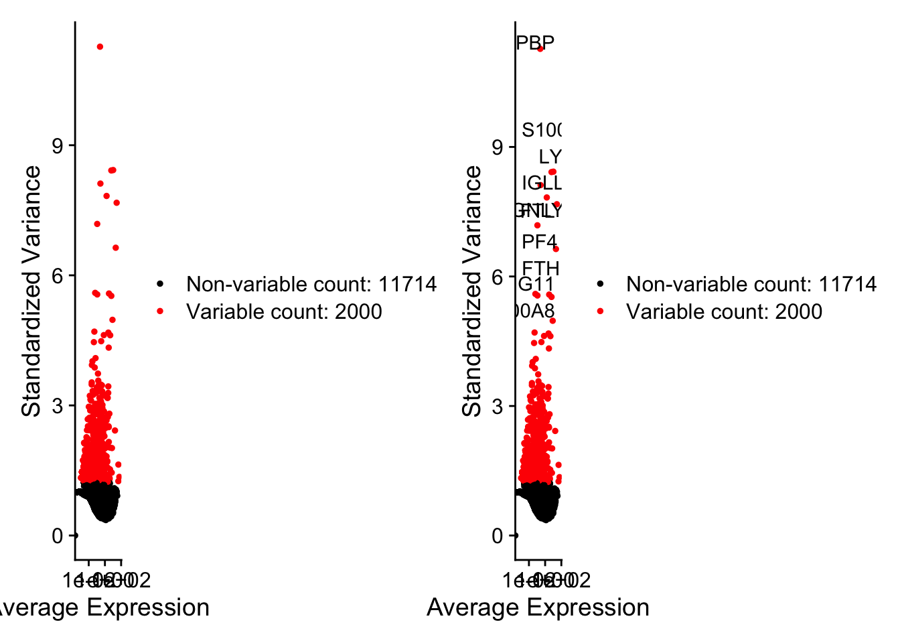
Scaling the data
all_genes <- rownames(pbmc)
pbmc <- ScaleData(pbmc, features = all_genes)
# Remove unwanted sources of variation
# pbmc <- ScaleData(pbmc, vars.to.regress = "percent.mt")Perform linear dimensional reduction
PCA
pbmc <- RunPCA(pbmc, features = VariableFeatures(object = pbmc))
# Examine and visualize PCA results a few different ways
print(pbmc[["pca"]], dims = 1:5, nfeatures = 5)
## PC_ 1
## Positive: CST3, TYROBP, LST1, AIF1, FTL
## Negative: MALAT1, LTB, IL32, IL7R, CD2
## PC_ 2
## Positive: CD79A, MS4A1, TCL1A, HLA-DQA1, HLA-DQB1
## Negative: NKG7, PRF1, CST7, GZMB, GZMA
## PC_ 3
## Positive: HLA-DQA1, CD79A, CD79B, HLA-DQB1, HLA-DPB1
## Negative: PPBP, PF4, SDPR, SPARC, GNG11
## PC_ 4
## Positive: HLA-DQA1, CD79B, CD79A, MS4A1, HLA-DQB1
## Negative: VIM, IL7R, S100A6, IL32, S100A8
## PC_ 5
## Positive: GZMB, NKG7, S100A8, FGFBP2, GNLY
## Negative: LTB, IL7R, CKB, VIM, MS4A7Visualize it
VizDimLoadings(
pbmc, dims = 1:2,
nfeatures = 20,
reduction = "pca"
)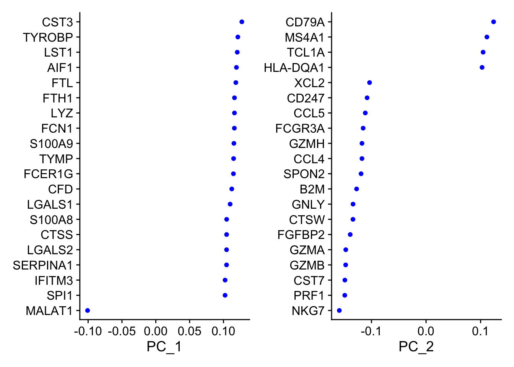
# PCA dotplot
DimPlot(pbmc, reduction = "pca") + NoLegend()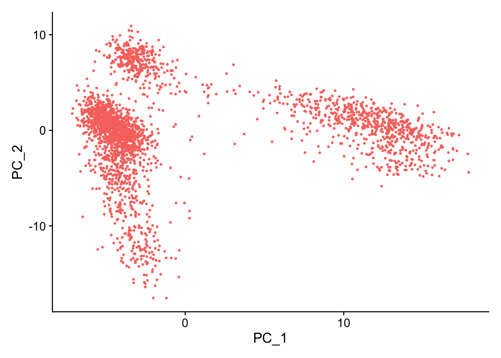
# PCA heatmap
DimHeatmap(pbmc, dims = 1, cells = 500, balanced = TRUE)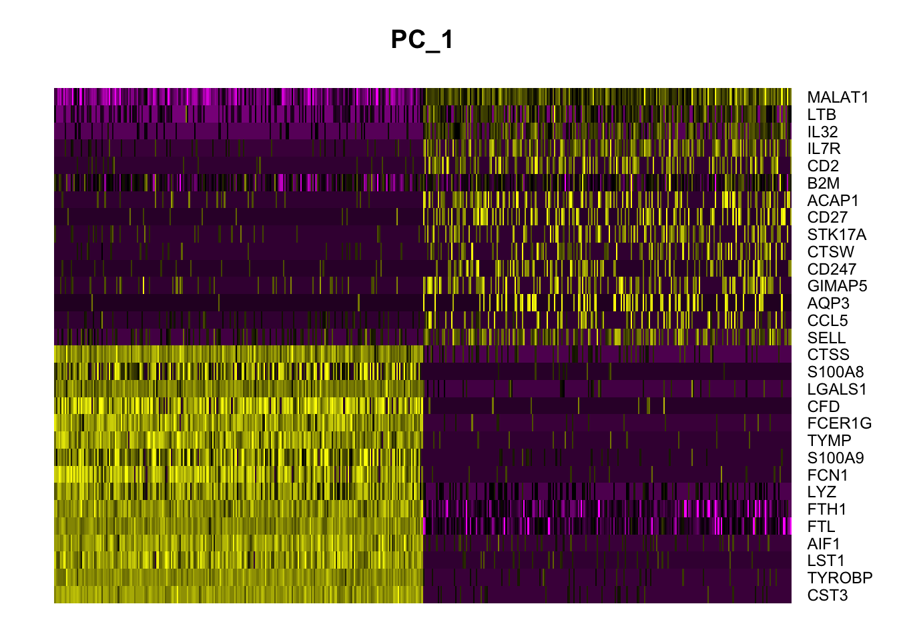
DimHeatmap(pbmc, dims = 1:15, cells = 500, balanced = TRUE)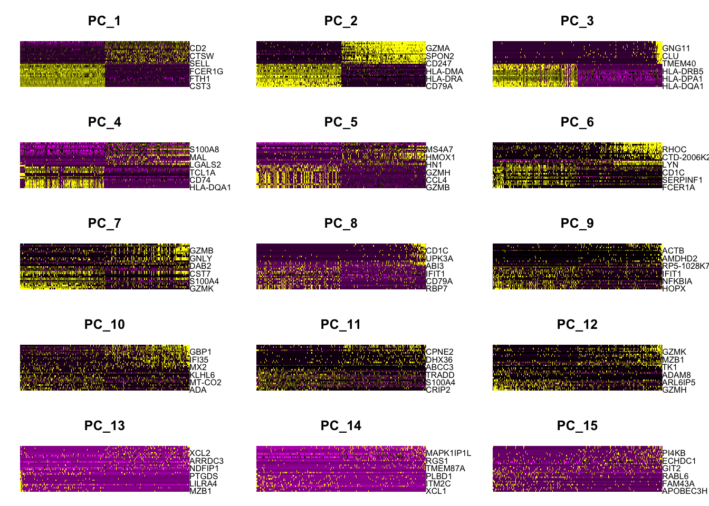
Determine the dimensionality of the dataset
JackStrawPlot
# NOTE: This process can take a long time for big datasets, comment out for expediency. More
# approximate techniques such as those implemented in ElbowPlot() can be used to reduce
# Computation time
pbmc <- JackStraw(pbmc, num.replicate = 100)
pbmc <- ScoreJackStraw(pbmc, dims = 1:20)
JackStrawPlot(pbmc, dims = 1:15)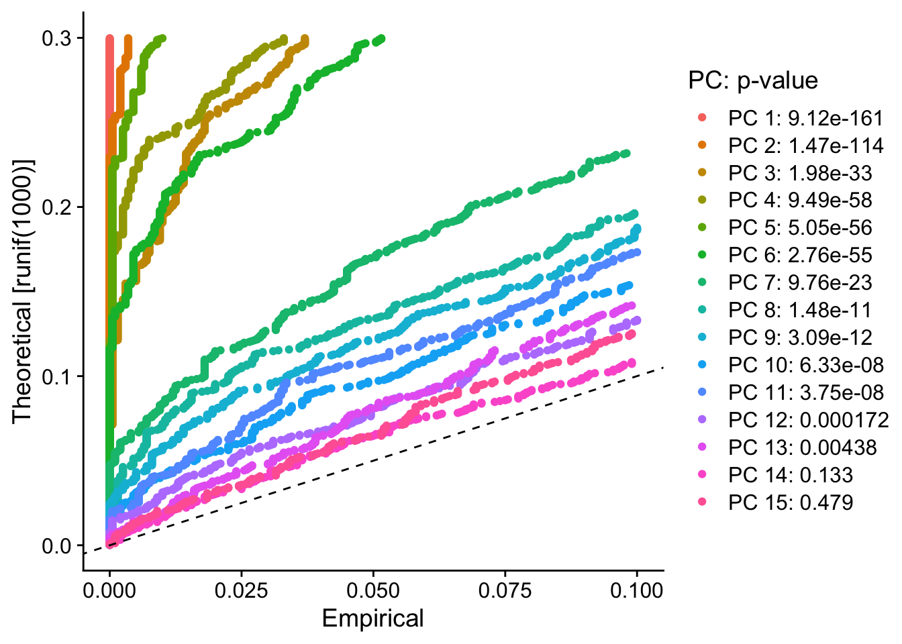
Elbow plot
ElbowPlot(pbmc)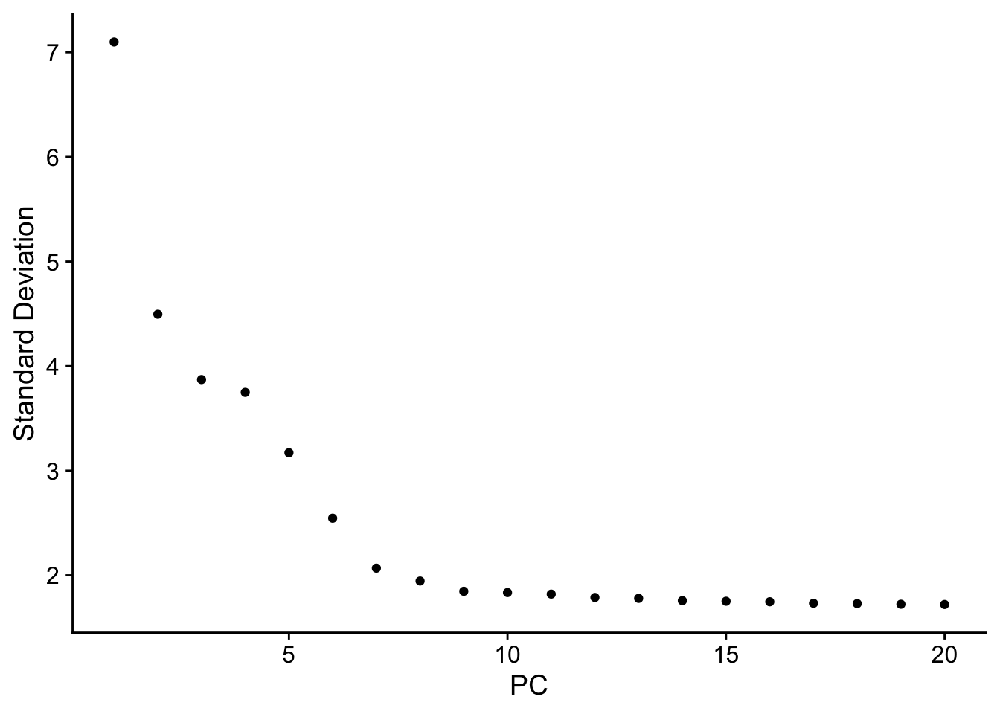
Cluster the cells
pbmc <- FindNeighbors(pbmc, dims = 1:10)
pbmc <- FindClusters(pbmc, resolution = 0.5)
## Modularity Optimizer version 1.3.0 by Ludo Waltman and Nees Jan van Eck
##
## Number of nodes: 2638
## Number of edges: 95927
##
## Running Louvain algorithm...
## Maximum modularity in 10 random starts: 0.8728
## Number of communities: 9
## Elapsed time: 0 seconds
# Look at cluster IDs of the first 5 cells
head(Idents(pbmc), 5)
## AAACATACAACCAC-1 AAACATTGAGCTAC-1 AAACATTGATCAGC-1 AAACCGTGCTTCCG-1
## 2 3 2 1
## AAACCGTGTATGCG-1
## 6
## Levels: 0 1 2 3 4 5 6 7 8
# Look at the cells of specific cluster
head(subset(as.data.frame(pbmc@active.ident),pbmc@active.ident=="2"))
## pbmc@active.ident
## AAACATACAACCAC-1 2
## AAACATTGATCAGC-1 2
## AAACGCACTGGTAC-1 2
## AAAGAGACGAGATA-1 2
## AAAGCCTGTATGCG-1 2
## AAATCAACTCGCAA-1 2
# Retrieve the cells of a cluster
subpbmc <- subset(x = pbmc,idents="2")
subpbmc
## An object of class Seurat
## 13714 features across 476 samples within 1 assay
## Active assay: RNA (13714 features, 2000 variable features)
## 3 layers present: counts, data, scale.data
## 1 dimensional reduction calculated: pca
head(subpbmc@active.ident,5)
## AAACATACAACCAC-1 AAACATTGATCAGC-1 AAACGCACTGGTAC-1 AAAGAGACGAGATA-1
## 2 2 2 2
## AAAGCCTGTATGCG-1
## 2
## Levels: 2Run non-linear dimensional reduction
UMAP
# If you haven't installed UMAP, you can do so via
# reticulate::py_install(packages = "umap-learn")
pbmc <- RunUMAP(pbmc, dims = 1:10)
# Note that you can set `label = TRUE` or use the LabelClusters function to help label
# Individual clusters
DimPlot(pbmc, reduction = "umap")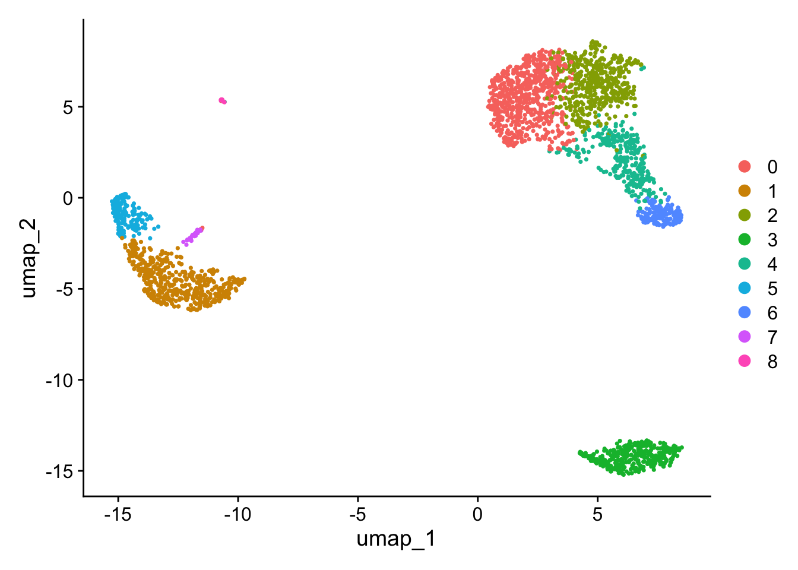
tSNE
pbmc <- RunTSNE(pbmc, dims = 1:10)
head(pbmc@reductions$tsne@cell.embeddings)
## tSNE_1 tSNE_2
## AAACATACAACCAC-1 -12.721811 6.420117
## AAACATTGAGCTAC-1 -20.682526 -22.307703
## AAACATTGATCAGC-1 -3.067779 23.686369
## AAACCGTGCTTCCG-1 30.350720 -9.899162
## AAACCGTGTATGCG-1 -35.994115 9.507508
## AAACGCACTGGTAC-1 -3.124182 12.680105
DimPlot(pbmc, reduction = "tsne")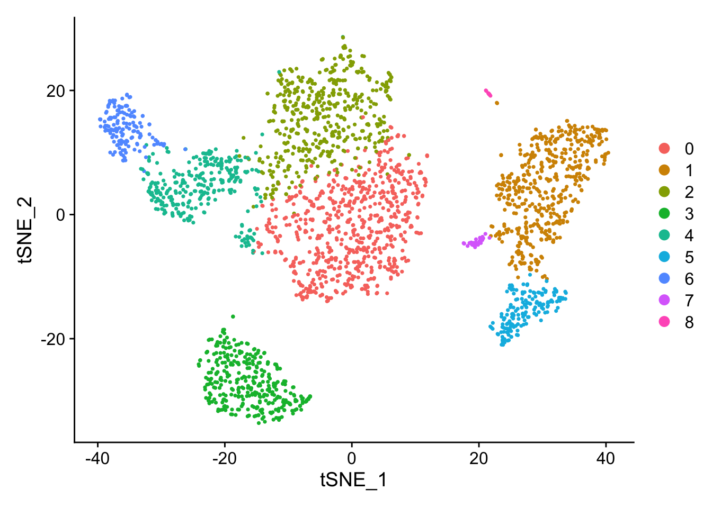
Compare
# Note that you can set `label = TRUE` or use the LabelClusters function to help label
# Individual clusters
plot1 <- DimPlot(pbmc, reduction = "umap", label = TRUE)
plot2 <- DimPlot(pbmc, reduction = "tsne", label = TRUE)
plot1 + plot2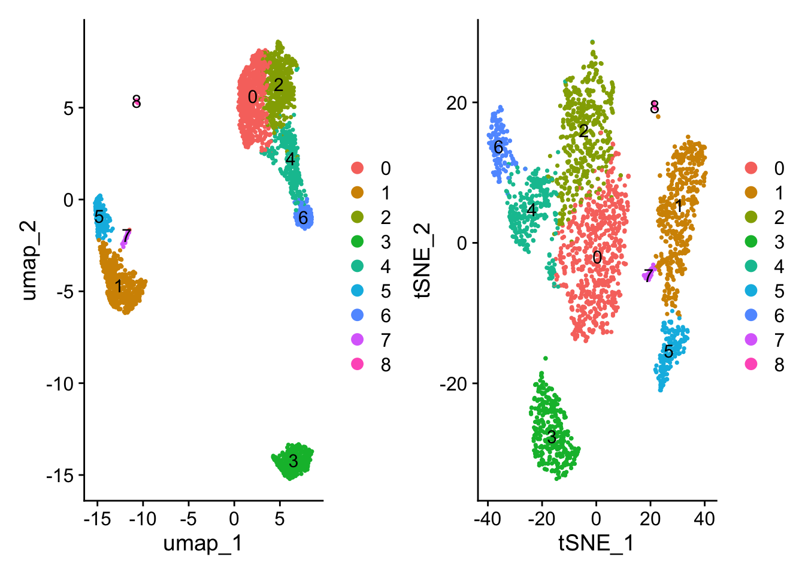
Finding cluster biomarkers
Find clusters
# Find all markers of cluster 2
cluster2_markers <- FindMarkers(pbmc, ident.1 = 2)
head(cluster2_markers, n = 5)
## p_val avg_log2FC pct.1 pct.2 p_val_adj
## IL32 2.892340e-90 1.3070772 0.947 0.465 3.966555e-86
## LTB 1.060121e-86 1.3312674 0.981 0.643 1.453850e-82
## CD3D 8.794641e-71 1.0597620 0.922 0.432 1.206097e-66
## IL7R 3.516098e-68 1.4377848 0.750 0.326 4.821977e-64
## LDHB 1.642480e-67 0.9911924 0.954 0.614 2.252497e-63
# Find all markers distinguishing cluster 5 from clusters 0 and 3
cluster5_markers <- FindMarkers(pbmc, ident.1 = 5, ident.2 = c(0, 3))
head(cluster5_markers, n = 5)
## p_val avg_log2FC pct.1 pct.2 p_val_adj
## FCGR3A 8.246578e-205 6.794969 0.975 0.040 1.130936e-200
## IFITM3 1.677613e-195 6.192558 0.975 0.049 2.300678e-191
## CFD 2.401156e-193 6.015172 0.938 0.038 3.292945e-189
## CD68 2.900384e-191 5.530330 0.926 0.035 3.977587e-187
## RP11-290F20.3 2.513244e-186 6.297999 0.840 0.017 3.446663e-182
# Find markers for every cluster compared to all remaining cells, report only the positive ones
pbmc_markers <- FindAllMarkers(pbmc, only.pos = TRUE)
pbmc_markers %>%
group_by(cluster) %>%
dplyr::filter(avg_log2FC > 1)
## # A tibble: 7,019 × 7
## # Groups: cluster [9]
## p_val avg_log2FC pct.1 pct.2 p_val_adj cluster gene
## <dbl> <dbl> <dbl> <dbl> <dbl> <fct> <chr>
## 1 3.75e-112 1.21 0.912 0.592 5.14e-108 0 LDHB
## 2 9.57e- 88 2.40 0.447 0.108 1.31e- 83 0 CCR7
## 3 1.15e- 76 1.06 0.845 0.406 1.58e- 72 0 CD3D
## 4 1.12e- 54 1.04 0.731 0.4 1.54e- 50 0 CD3E
## 5 1.35e- 51 2.14 0.342 0.103 1.86e- 47 0 LEF1
## 6 1.94e- 47 1.20 0.629 0.359 2.66e- 43 0 NOSIP
## 7 2.81e- 44 1.53 0.443 0.185 3.85e- 40 0 PIK3IP1
## 8 6.27e- 43 1.99 0.33 0.112 8.60e- 39 0 PRKCQ-AS1
## 9 1.16e- 40 2.70 0.2 0.04 1.59e- 36 0 FHIT
## 10 1.34e- 34 1.96 0.268 0.087 1.84e- 30 0 MAL
## # ℹ 7,009 more rows
# ?FindAllMarkers
cluster0_markers <- FindMarkers(
pbmc, ident.1 = 0, logfc.threshold = 0.25, test.use = "roc",
only.pos = TRUE
)Visualization
### Show expression probability distributions across clusters
VlnPlot(pbmc, features = c("MS4A1", "CD79A"))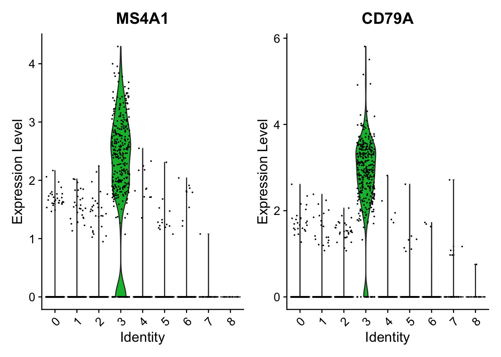
# You can plot raw counts as well
VlnPlot(pbmc, features = c("NKG7", "PF4"), layer = "counts", log = TRUE)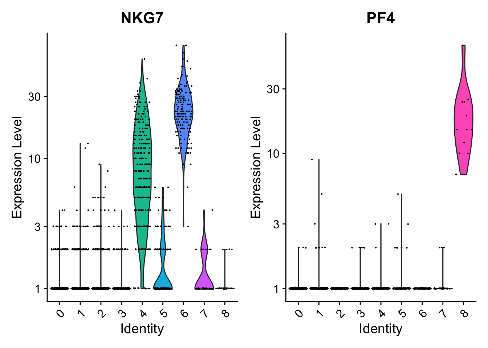
# Visualizes feature expression on a tSNE or PCA plot
FeaturePlot(
pbmc, features = c(
"MS4A1", "GNLY", "CD3E", "CD14", "FCER1A", "FCGR3A",
"LYZ", "PPBP","CD8A"
)
)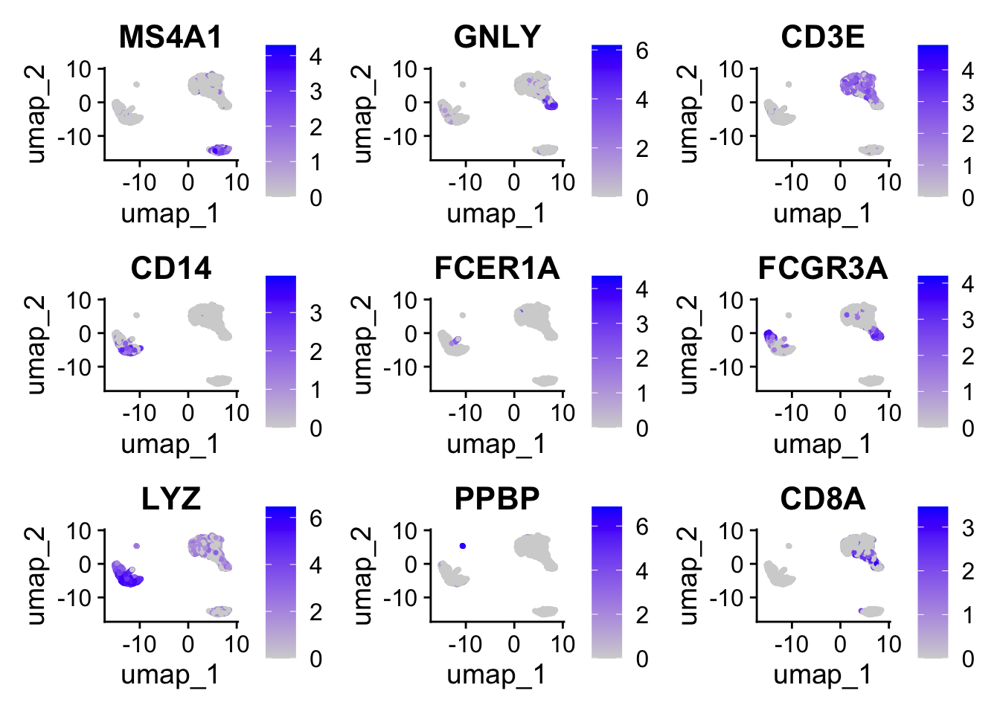
# Expression heatmap for given cells and features
top10 <- pbmc_markers %>%
group_by(cluster) %>%
top_n(n = 10, wt = avg_log2FC)
DoHeatmap(pbmc, features = top10$gene) + NoLegend()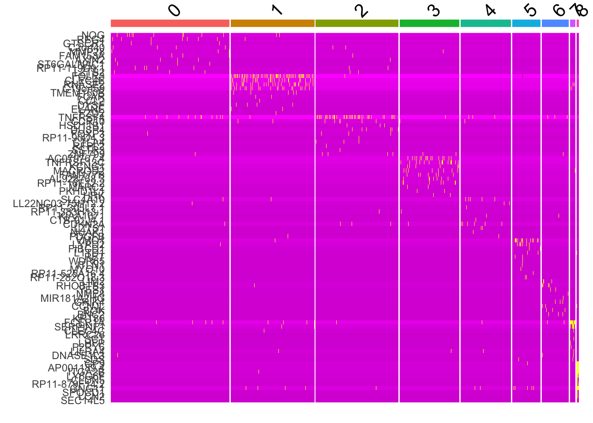
Assign cell type identity to clusters
Fortunately in the case of this dataset, we can use canonical markers to easily match the unbiased clustering to known cell types:
Cluster ID Markers Cell Type 0 IL7R, CCR7 Naive CD4+ T 1 CD14, LYZ CD14+ Mono 2 IL7R, S100A4 Memory CD4+ 3 MS4A1 B 4 CD8A CD8+ T 5 FCGR3A, MS4A7 FCGR3A+ Mono 6 GNLY, NKG7 NK 7 FCER1A, CST3 DC 8 PPBP Platelet
new_cluster_ids <- c(
"Naive CD4 T", "CD14+ Mono", "Memory CD4 T", "B", "CD8 T", "FCGR3A+ Mono","NK", "DC", "Platelet"
)
names(new_cluster_ids) <- levels(pbmc)
pbmc <- RenameIdents(pbmc, new_cluster_ids)
DimPlot(pbmc, reduction = "umap", label = TRUE, pt.size = 0.5) +
NoLegend()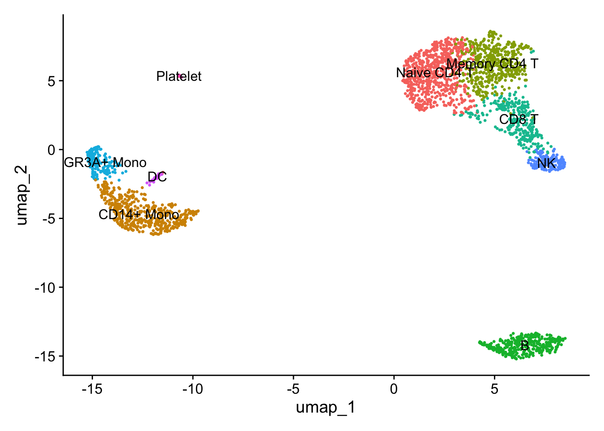
# p <- DimPlot(pbmc, reduction = "umap", label = TRUE, label.size = 4.5) +
# xlab("UMAP 1") + ylab("UMAP 2") +
# theme(
# axis.title = element_text(size = 18),
# legend.text = element_text(size = 18)) +
# guides(colour = guide_legend(override.aes = list(size = 10))
# )
# Save plot
# ggsave(
# filename = "../output/images/pbmc3k_umap.jpg",
# height = 7, width = 12, plot = p, quality = 50
# )
# Save data
# saveRDS(pbmc, file = "./learn/pbmc3k/pbmc3k_final.rds")sessionInfo()
## R version 4.3.1 (2023-06-16)
## Platform: aarch64-apple-darwin20 (64-bit)
## Running under: macOS Sonoma 14.2
##
## Matrix products: default
## BLAS: /Library/Frameworks/R.framework/Versions/4.3-arm64/Resources/lib/libRblas.0.dylib
## LAPACK: /Library/Frameworks/R.framework/Versions/4.3-arm64/Resources/lib/libRlapack.dylib; LAPACK version 3.11.0
##
## locale:
## [1] en_US.UTF-8/en_US.UTF-8/en_US.UTF-8/C/en_US.UTF-8/en_US.UTF-8
##
## time zone: Asia/Singapore
## tzcode source: internal
##
## attached base packages:
## [1] stats4 stats graphics grDevices utils datasets methods
## [8] base
##
## other attached packages:
## [1] patchwork_1.1.3 ggrepel_0.9.4
## [3] SingleR_2.2.0 SummarizedExperiment_1.30.2
## [5] Biobase_2.62.0 GenomicRanges_1.52.1
## [7] GenomeInfoDb_1.38.0 IRanges_2.36.0
## [9] S4Vectors_0.40.2 BiocGenerics_0.48.1
## [11] MatrixGenerics_1.14.0 matrixStats_1.1.0
## [13] Seurat_5.0.1 SeuratObject_5.0.1
## [15] sp_2.1-2 lubridate_1.9.3
## [17] forcats_1.0.0 stringr_1.5.1
## [19] dplyr_1.1.4 purrr_1.0.2
## [21] readr_2.1.4 tidyr_1.3.0
## [23] tibble_3.2.1 ggplot2_3.4.4
## [25] tidyverse_2.0.0 here_1.0.1
##
## loaded via a namespace (and not attached):
## [1] RcppAnnoy_0.0.21 splines_4.3.1
## [3] later_1.3.1 bitops_1.0-7
## [5] R.oo_1.25.0 polyclip_1.10-6
## [7] fastDummies_1.7.3 lifecycle_1.0.4
## [9] rprojroot_2.0.4 globals_0.16.2
## [11] lattice_0.22-5 MASS_7.3-60
## [13] magrittr_2.0.3 limma_3.58.1
## [15] plotly_4.10.3 rmarkdown_2.25
## [17] yaml_2.3.7 httpuv_1.6.12
## [19] sctransform_0.4.1 spam_2.10-0
## [21] spatstat.sparse_3.0-3 reticulate_1.34.0
## [23] cowplot_1.1.1 pbapply_1.7-2
## [25] RColorBrewer_1.1-3 abind_1.4-5
## [27] zlibbioc_1.48.0 Rtsne_0.16
## [29] R.utils_2.12.3 RCurl_1.98-1.13
## [31] GenomeInfoDbData_1.2.11 irlba_2.3.5.1
## [33] listenv_0.9.0 spatstat.utils_3.0-4
## [35] goftest_1.2-3 RSpectra_0.16-1
## [37] spatstat.random_3.2-2 fitdistrplus_1.1-11
## [39] parallelly_1.36.0 DelayedMatrixStats_1.22.6
## [41] leiden_0.4.3.1 codetools_0.2-19
## [43] DelayedArray_0.26.7 tidyselect_1.2.0
## [45] farver_2.1.1 ScaledMatrix_1.8.1
## [47] spatstat.explore_3.2-5 jsonlite_1.8.7
## [49] ellipsis_0.3.2 progressr_0.14.0
## [51] ggridges_0.5.4 survival_3.5-7
## [53] tools_4.3.1 ica_1.0-3
## [55] Rcpp_1.0.11 glue_1.6.2
## [57] gridExtra_2.3 xfun_0.41
## [59] withr_2.5.2 fastmap_1.1.1
## [61] fansi_1.0.5 digest_0.6.33
## [63] rsvd_1.0.5 timechange_0.2.0
## [65] R6_2.5.1 mime_0.12
## [67] colorspace_2.1-0 scattermore_1.2
## [69] tensor_1.5 spatstat.data_3.0-3
## [71] R.methodsS3_1.8.2 utf8_1.2.4
## [73] generics_0.1.3 data.table_1.14.8
## [75] httr_1.4.7 htmlwidgets_1.6.3
## [77] S4Arrays_1.0.6 uwot_0.1.16
## [79] pkgconfig_2.0.3 gtable_0.3.4
## [81] lmtest_0.9-40 XVector_0.42.0
## [83] htmltools_0.5.7 dotCall64_1.1-1
## [85] scales_1.3.0 png_0.1-8
## [87] knitr_1.45 tzdb_0.4.0
## [89] reshape2_1.4.4 nlme_3.1-163
## [91] zoo_1.8-12 KernSmooth_2.23-22
## [93] parallel_4.3.1 miniUI_0.1.1.1
## [95] vipor_0.4.5 ggrastr_1.0.2
## [97] pillar_1.9.0 grid_4.3.1
## [99] vctrs_0.6.5 RANN_2.6.1
## [101] promises_1.2.1 BiocSingular_1.16.0
## [103] beachmat_2.16.0 xtable_1.8-4
## [105] cluster_2.1.4 beeswarm_0.4.0
## [107] evaluate_0.23 cli_3.6.1
## [109] compiler_4.3.1 rlang_1.1.2
## [111] crayon_1.5.2 future.apply_1.11.0
## [113] labeling_0.4.3 plyr_1.8.9
## [115] ggbeeswarm_0.7.2 stringi_1.8.2
## [117] viridisLite_0.4.2 deldir_2.0-2
## [119] BiocParallel_1.36.0 munsell_0.5.0
## [121] lazyeval_0.2.2 spatstat.geom_3.2-7
## [123] Matrix_1.6-3 RcppHNSW_0.5.0
## [125] hms_1.1.3 sparseMatrixStats_1.12.2
## [127] future_1.33.0 statmod_1.5.0
## [129] shiny_1.8.0 ROCR_1.0-11
## [131] igraph_1.5.1